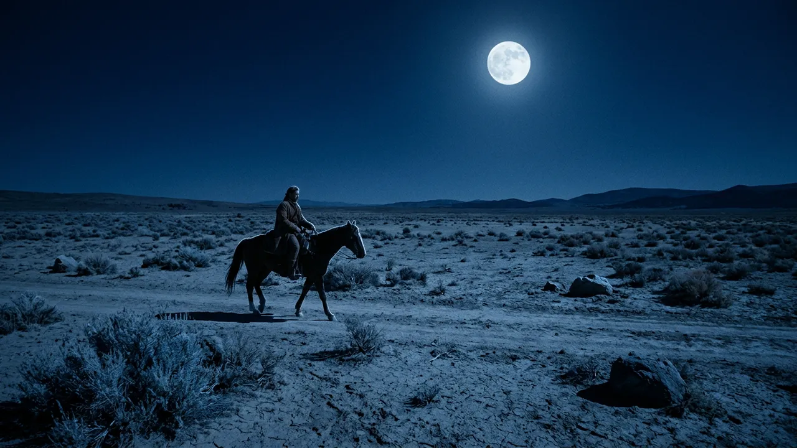

Final film ready
Final film ready
NEELKANTH · EPISODE 01
The Poison of the Ocean
Monica completed the episode-level review. The candidate is waiting for final human approval.
Monica keeps every production moving in the background. Return only when your creative judgement is needed.
Final film ready
Monica completed the episode-level review. The candidate is waiting for final human approval.

Repair plan readyThree timecoded notes have been resolved into two repair work units. Your confirmation is needed before regeneration.
No simulated series or episode matches that search.
Stories of Shiva’s boundless compassion, stillness and cosmic responsibility.
Every new episode begins with the latest approved release, then pins its own immutable snapshot.
Sacred radiance, cinematic faces and controlled gold-blue atmosphere.
Inherited by new episodesEpisode 04 · three notes grouped into two repair work units.
Promoted to World Bible release 04 after continuity review.
Pinned World Bible release 03; newer canon remains optional.
Simulation note: this switched Episode aggregate uses the approved Neelkanth chamber content as a representative flow; production state remains isolated to the selected aggregate.
Your narration is the immutable spine of the film. Genie may direct around it, but every spoken word remains yours.
Two persistent Zyra narrators. Both speak conversational Delhi Hindi and move naturally through Sanskrit names and shlokas.
“समुद्र मंथन से जब अमृत नहीं, बल्कि कालकूट विष निकला…”
Pace or performance changes create a new voice revision and mark shot timing, captions and the mix stale.
Sacred radiance, cinematic faces and devotional grandeur.
Character
Glowing Divine Realism
Calm, compassionate and immeasurably powerful. Blue-grey complexion, matted locks, crescent moon, rudraksha and trishul.
 Character
Glowing Divine Realism
Character
Glowing Divine Realism
Steady compassion, restrained royal ornament and protective warmth.
 Location
Glowing Divine Realism
Location
Glowing Divine Realism
Snowlight, sacred scale and Himalayan stillness; spatially grounded for repeatable coverage.
Once accepted, Genie quietly builds the complete reference pack. Expressions, full-body views, ornaments, weapons, reverse angles and lighting variants are generated and checked automatically.
1080 × 1920 · Hindi · Male narrator · Glowing Divine Realism
SIMULATED CURRENT REVIEWERCreative owner · devotional-film cultural approval authorizedOne action may submit both human decisions, but Genie stores them as separate records with separate evidence.
Sample final-review state. In production, every verdict opens its stored evidence.
Glowing devotional realism, sacred radiance, cinematic facial detail, controlled gold-blue palette and atmospheric depth.